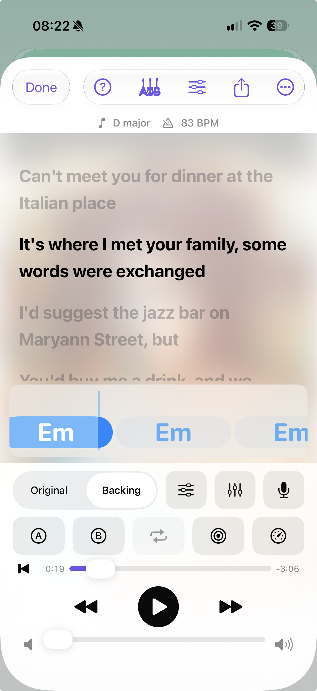
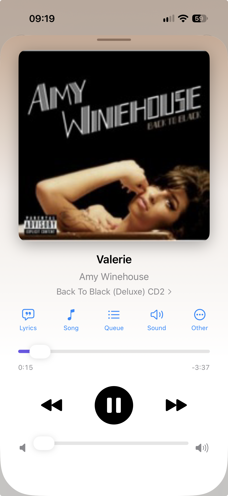
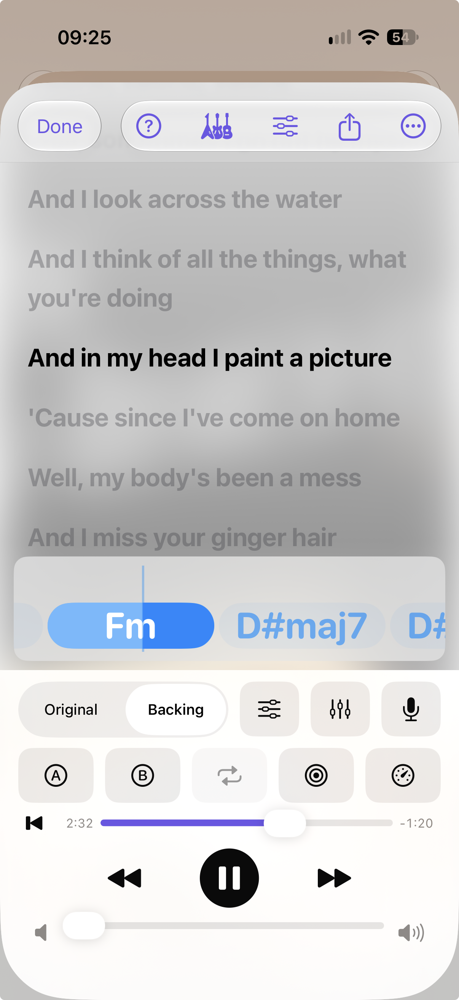

IsoBox is an iPhone app that slows songs down, splits them into parts, shows lyrics and chords that follow the music, and lets you record yourself playing along. Everything happens on your phone.

Built for musicians who learn songs by ear. Bring your own files; IsoBox adds the practice tools.
Artists, albums and playlists from your own files, with lock-screen controls and background playback.
Change speed without changing pitch, transpose, loop the hard bit, and let the speed trainer ramp you up.
Drums, bass, vocals, guitar, piano and the rest, separated on your phone. Mute one and play it yourself.
Paste, scan or import lyrics, tap to time them, or use Auto-Time to line them up for you.
IsoBox works out the key and chords, shows them over the lyrics, and lets you correct them.
Record your voice or instrument against the song, keep the take with it, and export the mix.
Export the mix, the parts, lyrics, timed .lrc files and chord sheets. Back up everything to one file.
No account, no ads, no tracking. Nothing is uploaded: the models run on your device.
Replace the pictures in the images folder with your own screenshots.




IsoBox is being tested through TestFlight, Apple’s free testing app. It takes about 20 minutes to try the main parts and your feedback shapes what comes next.